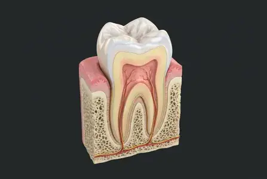
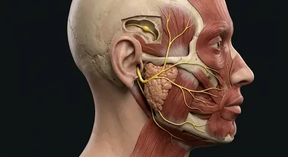
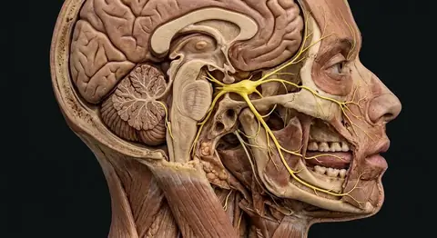

Anterior skull · surface bones
Front view identifies the frontal bone, orbits, nasal bones, zygomatic arches, maxillae, and mandible with precision anatomical markers.
Built from twenty-two interlocking bones joined primarily by immovable sutures, the adult human skull forms both an armored vault for the brain and a frame for the face. In this illustrated guide to skull and facial bones anatomy, we examine 30 documented structures—including frontal bone, right maxilla, left maxilla, right zygomatic bone—linking regional topography, tissue architecture, physiological mechanisms, and clinical reasoning.
 Left parietal boneBony orbitRight nasal boneLeft temporal boneLeft lacrimal boneRight zygomatic boneInfraorbital foramenRight maxillaMental foramenCoronal and sagittal suturesFrontal boneLeft nasal boneLeft zygomatic boneZygomatic archLeft maxillaTemporomandibular jointMandible
Left parietal boneBony orbitRight nasal boneLeft temporal boneLeft lacrimal boneRight zygomatic boneInfraorbital foramenRight maxillaMental foramenCoronal and sagittal suturesFrontal boneLeft nasal boneLeft zygomatic boneZygomatic archLeft maxillaTemporomandibular jointMandibleBuilt from twenty-two interlocking bones joined primarily by immovable sutures, the adult human skull forms both an armored vault for the brain and a frame for the face. An adult skull has 22 bones: 14 facial (six paired types and the unpaired vomer and mandible) and 8 cranial. The maxillae anchor upper teeth, the mandible is the mobile lower jaw, and the palatine bones lie deep at the back of the hard palate. Ethmoid contributes to the upper bony nasal septum but is counted as a cranial bone; the inferior nasal conchae are separate paired facial bones. A front view cannot reliably identify every deep or posterior bone; those entries use an unpinned sectional reference. The hyoid and the six ear ossicles belong in the wider 206-bone adult skeleton count but not the 22 skull bones. Within the human body, the skull & facial bones (Ossa cranii et faciei) is situated in head: 8 cranial bones around the brain and 14 facial bones supporting jaws, orbits and nose, receives arterial perfusion via external carotid branches supply much of face; internal carotid/ophthalmic contributions supply orbit and forehead, and is innervated by CN V carries most facial skin sensation; CN VII moves expression muscles; CN V3 moves major chewing muscles.
The frontal bone (Os frontale) forms the forehead, roof of the orbits and much of the anterior cranial floor. Physiologically, the frontal bone protects frontal brain and supports the upper orbit. Structurally, the right maxilla (Maxilla dextra) comprises right upper jaw below the orbit, housing upper-tooth sockets and much of the maxillary sinus. Physiologically, the right maxilla forms upper jaw, orbit floor and anterior hard palate. Structurally, the left maxilla (Maxilla sinistra) comprises left upper jaw below the orbit; meets the opposite maxilla at the anterior midline. Physiologically, the left maxilla holds upper teeth and forms the left anterior hard palate. Structurally, the right zygomatic bone (Os zygomaticum dextrum) comprises right cheekbone forming the lateral rim and part of the floor of the orbit. Physiologically, the right zygomatic bone supports cheek contour and the bony orbit. Structurally, the left zygomatic bone (Os zygomaticum sinistrum) comprises left cheekbone forming the outer orbital rim and meeting the temporal bone at the arch. Physiologically, the left zygomatic bone protects the outer orbit and supports facial shape. The right nasal bone (Os nasale dextrum) is small right bone at the bony bridge of the nose, above the nasal opening. Physiologically, the right nasal bone forms the upper nasal bridge, not the flexible nose tip.
Clinically, regarding the frontal bone, the frontal sinus lies within the bone; fracture patterns can involve the anterior cranial floor. From a diagnostic standpoint, in the right maxilla, the infraorbital nerve (CN V2) exits through its infraorbital foramen. In clinical pathology involving the left maxilla, dental roots and maxillary sinus lie close together. Medical evaluation of the right zygomatic bone also notes that zygomatic fractures may affect the orbital rim and cheek projection.
Connected study pathways in this atlas: Teeth · dental anatomy, Skeleton, Facial nerve · CN VII.
Compare the anterior facial skeleton and the medial sagittal cutaway to trace all 22 skull bones, sutures, nasal septum components, and associated hyoid and middle-ear ossicles.
Front view identifies the frontal bone, orbits, nasal bones, zygomatic arches, maxillae, and mandible with precision anatomical markers.
Sagittal section reveals the sphenoid body, ethmoid perpendicular plate, vomer, palatine bones, inferior nasal concha, and internal cranial vault.
See all 206 adult bones → · Facial nerve CN VII → · Facial sensation CN V →
These 30 structures describe anatomy related to the chapter’s regional illustration. Each entry separates location, function and a clinical point.
Forms the forehead, roof of the orbits and much of the anterior cranial floor.
What it doesProtects frontal brain and supports the upper orbit.
Clinical connectionThe frontal sinus lies within the bone; fracture patterns can involve the anterior cranial floor.
Right upper side of the cranial vault; meets the frontal, opposite parietal, occipital and temporal bones.
What it doesProtects the superior and lateral cerebrum.
Clinical connectionSutures remain identifiable in adult skulls; a head injury needs clinical assessment.
Left upper side of the cranial vault, meeting the opposite parietal along the sagittal suture.
What it doesEncloses and protects the upper brain.
Clinical connectionDo not mistake a normal suture line for a fracture without clinical imaging.
Right lower side and base of the skull, surrounding the external acoustic opening and internal ear spaces.
What it doesHouses hearing and balance structures; helps form the jaw joint.
Clinical connectionCN VII passes through its facial canal and exits at the stylomastoid foramen.
Left lower side and skull base, including squamous, mastoid and petrous regions.
What it doesSupports the jaw joint and shields the inner ear.
Clinical connectionTemporal-bone injury may involve hearing or the facial nerve.
Posterior skull and base, surrounding the foramen magnum and meeting the parietal bones at the lambdoid suture.
What it doesProtects the rear brain and allows the spinal cord to pass through the skull base.
Clinical connectionThe occipital condyles articulate with the atlas (C1).
Central skull-base bone spanning the middle cranial fossa behind the orbits.
What it doesConnects many skull bones and contributes to the orbit.
Clinical connectionThe optic canal and several nerve passages relate to the sphenoid.
Between the orbits; forms the upper nasal septum, parts of the orbit and nasal roof.
What it doesSupports the olfactory region and separates the upper nasal cavity from the cranial cavity.
Clinical connectionIts middle and superior nasal conchae are parts of the ethmoid, not independent facial bones.
Right upper jaw below the orbit, housing upper-tooth sockets and much of the maxillary sinus.
What it doesForms upper jaw, orbit floor and anterior hard palate.
Clinical connectionThe infraorbital nerve (CN V2) exits through its infraorbital foramen.
Left upper jaw below the orbit; meets the opposite maxilla at the anterior midline.
What it doesHolds upper teeth and forms the left anterior hard palate.
Clinical connectionDental roots and maxillary sinus lie close together.
Right cheekbone forming the lateral rim and part of the floor of the orbit.
What it doesSupports cheek contour and the bony orbit.
Clinical connectionZygomatic fractures may affect the orbital rim and cheek projection.
Left cheekbone forming the outer orbital rim and meeting the temporal bone at the arch.
What it doesProtects the outer orbit and supports facial shape.
Clinical connectionAn orbital rim injury can involve the neighboring maxilla.
Small right bone at the bony bridge of the nose, above the nasal opening.
What it doesForms the upper nasal bridge, not the flexible nose tip.
Clinical connectionFractures often involve nasal bones but the lower nose is mainly cartilage.
Small left bone joining the opposite nasal bone along the midline of the bridge.
What it doesSupports the upper nose and meets the frontal bone.
Clinical connectionAn injured nasal bridge can be accompanied by septal injury.
Smallest and most fragile bone of the viscerocranium, situated in the anterior part of the right medial orbital wall between the frontal process of the maxilla anteriorly and the orbital plate of the ethmoid posteriorly.
What it doesForms the lacrimal fossa (with the maxilla) that houses the membranous lacrimal sac and initiates the nasolacrimal drainage canal into the inferior nasal meatus.
Clinical connectionDacryocystorhinostomy (DCR) creates a surgical bypass through the thin lacrimal bone into the middle nasal meatus to relieve nasolacrimal duct obstruction.
Delicate rectangular bony plate in the anterior-inferior portion of the left medial orbital wall, bearing the posterior lacrimal crest where the orbicularis oculi (lacrimal part) attaches.
What it doesSupports the left lacrimal sac and directs tear outflow downward through the nasolacrimal duct into the left inferior nasal meatus.
Clinical connectionBlunt trauma to the medial canthus or orbital blowout fractures can comminute the thin lacrimal and ethmoidal lamina papyracea plates.
L-shaped bone situated between the posterior maxilla and the pterygoid process of the sphenoid, consisting of a horizontal plate, a perpendicular plate, and three processes (pyramidal, orbital, and sphenoidal).
What it doesIts horizontal plate forms the posterior quarter of the bony hard palate and floor of the nasal cavity, while its perpendicular plate forms part of the lateral nasal wall and pterygopalatine fossa.
Clinical connectionThe greater and lesser palatine foramina perforate the posterolateral horizontal plate to transmit the greater and lesser palatine nerves (CN V2) and vessels to the hard and soft palate.
Deep L-shaped viscerocranial bone articulating at the midline interpalatine suture with the right palatine bone and anteriorly at the transverse palatine suture with the palatine process of the left maxilla.
What it doesCompletes the posterior bony roof of the oral cavity, lateral nasal cavity wall, and a small posteromedial corner of the orbital floor.
Clinical connectionFailure of the embryonic palatal shelves to fuse along the midline produces cleft palate, creating an abnormal communication between the oral and nasal cavities.
Scroll-like, independent facial bone articulating with the medial wall of the right maxilla, lacrimal bone, ethmoid uncinate process, and perpendicular plate of the palatine bone along the lower lateral nasal wall.
What it doesProjects into the nasal cavity above the inferior nasal meatus to swirl, warm, humidify, and filter inspired air across a richly vascularized pseudostratified ciliated mucosa.
Clinical connectionUnlike the superior and middle nasal conchae (which are processes of the cranial ethmoid bone), the inferior nasal concha is a standalone facial bone; mucosal hypertrophy here is a major cause of chronic nasal airway obstruction.
Curved, horizontal bony lamina hanging from the lower left lateral wall of the nasal cavity and roofing the left inferior nasal meatus where the nasolacrimal duct drains.
What it doesDramatically increases the functional respiratory surface area and venous erectile plexus contact of the left nasal passage.
Clinical connectionInferior turbinate reduction (turbinoplasty) preserves the bony scroll and mucosal function while widening the nasal valve in patients with refractory allergic or vasomotor rhinitis.
Thin, plowshare-shaped midline bone forming the posteroinferior portion of the bony nasal septum, articulating inferiorly with the nasal crest of the maxillae and palatine bones and superiorly with the sphenoidal rostrum and perpendicular plate of the ethmoid.
What it doesDivides the posterior nasal cavity into right and left nasal fossae down to the posterior nasal apertures (choanae).
Clinical connectionSevere nasal trauma or developmental overgrowth at the vomer-ethmoid-cartilage junction produces a deviated nasal septum that asymmetrically narrows the nasal airway.
Largest, strongest, and only mobile bone of the adult skull, composed of a horseshoe-shaped horizontal body housing the lower alveolar dental arch and paired vertical rami terminating in the anterior coronoid processes and posterior condylar heads.
What it doesArticulates bilaterally at the temporomandibular joints to execute mastication and speech while anchoring the muscles of mastication (masseter, temporalis, medial and lateral pterygoids) and suprahyoid floor-of-mouth muscles.
Clinical connectionBecause the mandible forms a rigid bony ring with the cranium, traumatic impacts commonly produce bilateral or contralateral fractures (for example, a parasymphyseal fracture paired with a contralateral subcondylar fracture).
Pyramidal four-walled bony socket formed by seven interlocking skull bones: frontal (roof), zygomatic (lateral wall/floor), maxilla (floor/medial rim), sphenoid (greater and lesser wings posteriorly), ethmoid (lamina papyracea medially), lacrimal (medial wall), and palatine (orbital process at floor apex).
What it doesHouses and mechanically shields the eyeball, optic nerve (CN II), extraocular muscles, cranial nerves III, IV, V1, and VI, ophthalmic vessels, and lacrimal apparatus.
Clinical connectionBlunt trauma to the globe increases intraorbital hydraulic pressure and frequently fractures the paper-thin inferior (maxillary) or medial (ethmoidal) orbital wall, potentially entrapping the inferior rectus muscle and causing diplopia.
Oval aperture located on the anterior surface of the maxilla approximately 6–8 mm inferior to the midpoint of the infraorbital rim.
What it doesTransmits the infraorbital nerve (the terminal cutaneous continuation of the maxillary division CN V2) and infraorbital artery and vein to the lower eyelid, lateral nose, cheek, and upper lip.
Clinical connectionNumbness of the ipsilateral cheek, upper lip, and maxillary anterior teeth following midface trauma indicates compression or injury of the infraorbital nerve along the orbital floor or foramen.
Round or oval opening on the anterolateral aspect of the mandibular body below the apex of the second premolar tooth (or between the first and second premolars).
What it doesTransmits the mental nerve and vessels (terminal branch of the inferior alveolar nerve, CN V3) emerging from the mandibular canal.
Clinical connectionSupplies general somatic sensation to the chin, lower lip skin, and labial gingiva of the mandibular anterior teeth; must be carefully identified and preserved during anterior mandibular surgery and implant placement.
Bony horizontal vault separating the oral cavity proper inferiorly from the nasal cavity superiorly, formed in its anterior three-quarters by the palatine processes of the paired maxillae and in its posterior one-quarter by the horizontal plates of the paired palatine bones.
What it doesProvides a rigid counter-surface against which the tongue compresses food boluses during swallowing and shapes resonant airflow during speech articulation.
Clinical connectionContains the anterior midline incisive fossa (transmitting the nasopalatine nerves) and posterolateral greater and lesser palatine foramina.
Vertical midline partition of the nasal cavity composed superiorly of the perpendicular plate of the ethmoid bone, posteroinferiorly of the vomer, and anteriorly completed by the hyaline septal cartilage.
What it doesSupports the external nasal dorsum and separates inspired airflow into paired right and left nasal chambers for laminar conditioning.
Clinical connectionSubmucous resection or septoplasty corrects obstructive septal spurs while preserving an anterior and dorsal cartilaginous L-strut to prevent saddle-nose deformity.
Lateral facial bony bridge formed anteriorly by the temporal process of the zygomatic bone and posteriorly by the zygomatic process of the temporal bone, united at the oblique zygomaticotemporal suture.
What it doesServes as the superior origin of the powerful masseter muscle while protecting the temporalis muscle tendon passing deep to the arch within the infratemporal fossa.
Clinical connectionIsolated depressed fractures of the zygomatic arch can impinge upon the underlying coronoid process of the mandible, causing painful restriction of mouth opening (trismus).
Ginglymoarthrodial (hinge-and-gliding) synovial joint modified by a biconcave fibrocartilaginous articular disc between the mandibular condyle inferiorly and the mandibular fossa and articular tubercle of the temporal bone superiorly.
What it doesLower compartment permits rotational hinge opening (~20 mm), while the upper compartment permits anterior translational gliding of the condyle and disc onto the articular tubercle for wide mouth opening and lateral grinding.
Clinical connectionAnterior displacement of the articular disc or lateral pterygoid spasm produces temporomandibular joint clicking, crepitus, and preauricular myofascial pain.
Immovable fibrous joints (synarthroses) of the calvaria: the coronal suture unites the frontal bone with both parietal bones anteriorly, while the midline sagittal suture unites the right and left parietal bones from bregma to lambda.
What it doesInterlock the flat neurocranial bones via serrated Sharpey collagen fibers and permit intramembranous bone growth during infancy and childhood.
Clinical connectionPremature fusion of a cranial suture in infancy (craniosynostosis) restricts skull expansion perpendicular to the fused suture, producing scaphocephaly (sagittal fusion) or brachycephaly/plagiocephaly (coronal fusion).
Short answers grounded in the structures described above. Use the illustrated guide for anatomical context.
An adult skull has 14 facial bones: six paired groups (maxillae, zygomatic, nasal, lacrimal, palatine and inferior nasal conchae) plus the mandible and vomer.
From the front, the maxillae form the upper jaw, zygomatic bones the cheeks, nasal bones the bridge, and the mandible the lower jaw.
No. Right and left inferior nasal conchae are independent facial bones. The middle and superior conchae are parts of the ethmoid, which is counted as a cranial bone.
No. The six middle-ear ossicles and the single hyoid bone are additional bones associated with the head and neck; they are included separately in the conventional 206-bone adult skeleton count.
The facial nerve leaves the temporal bone through the stylomastoid foramen and then branches within the parotid region.
Follow these connected structures and body systems in the illustrated atlas.

Teeth · dental anatomyInteractive Universal (#1–32 / A–T) and FDI two-digit dental charts, four tooth classes, enamel-dentin-pulp layers, periodontal ligaments, and V2/V3 nerves.↗ SkeletonAll 206 named adult bones—80 axial and 126 appendicular—plus compact osteons, spongy trabecular struts, red marrow cavities, and major joint families.↗
SkeletonAll 206 named adult bones—80 axial and 126 appendicular—plus compact osteons, spongy trabecular struts, red marrow cavities, and major joint families.↗
Facial nerve · CN VIITracing Cranial Nerve VII from the pons through the temporal bone canal and parotid gland to its five facial expression branches, chorda tympani taste, and tear fibers.↗
Trigeminal nerve · CN VTracing Cranial Nerve V from the trigeminal ganglion into ophthalmic (V1), maxillary (V2), and mandibular (V3) sensory territories plus the muscles of chewing.↗General anatomy references and related source chapters for continued study. These links do not make the digital illustrations clinical images or certify every anatomical variant.
This educational page is not medical advice and has not undergone formal clinical peer review. Spotted an error? Contact the editor.
Open the realistic interactive plate, label lines, focus view and self-test.